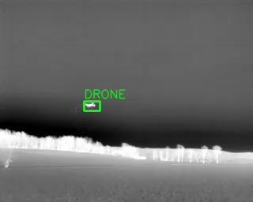
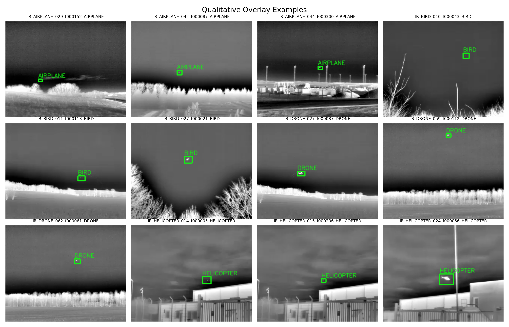

Scenario Controls
Scenario
Frame
Missing Modality
Final-Test Evidence
Best Fusion0.000
Best fusion (TEST): -
Best unimodal (TEST): -
Fusion gain (PR-AUC): -
Current conditions: SNR - dB | Vision - | Radar clutter -
Vision Stream

Audio Stream
Radar Stream
Adaptive Gate Weights Over Time
Fusion Confidence Over Time
Model Comparison (PR-AUC)
Robustness Snapshot
Latency Summary
| Method | Mean (ms) | P95 (ms) |
|---|
Qualitative Overlay Grid
